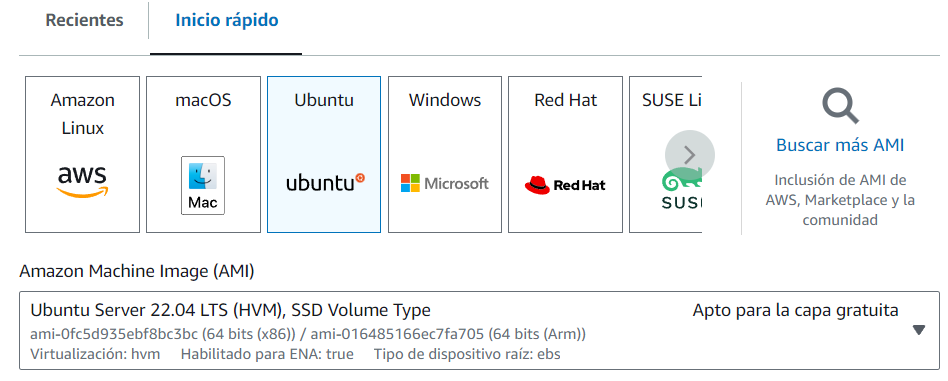
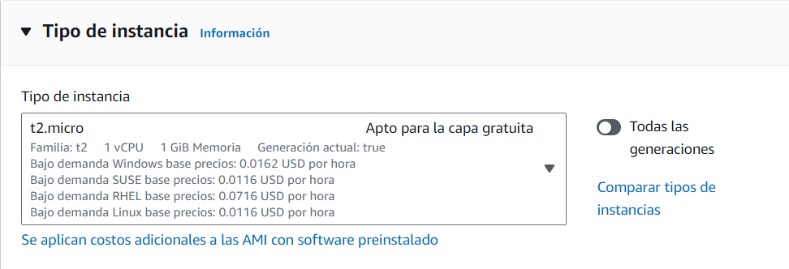
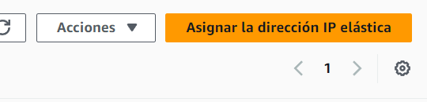
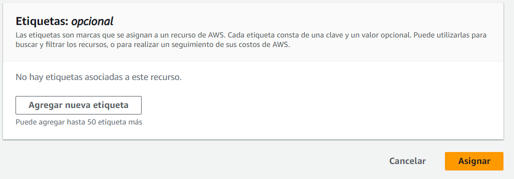
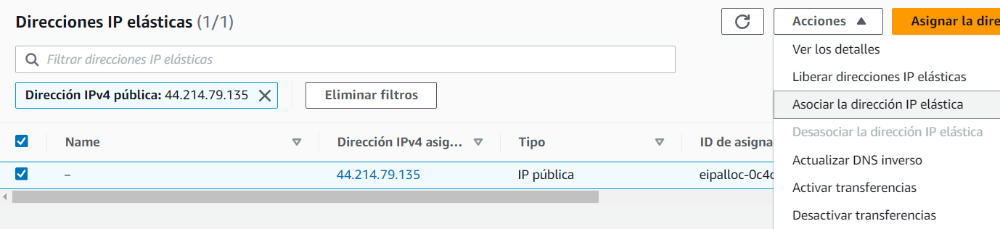
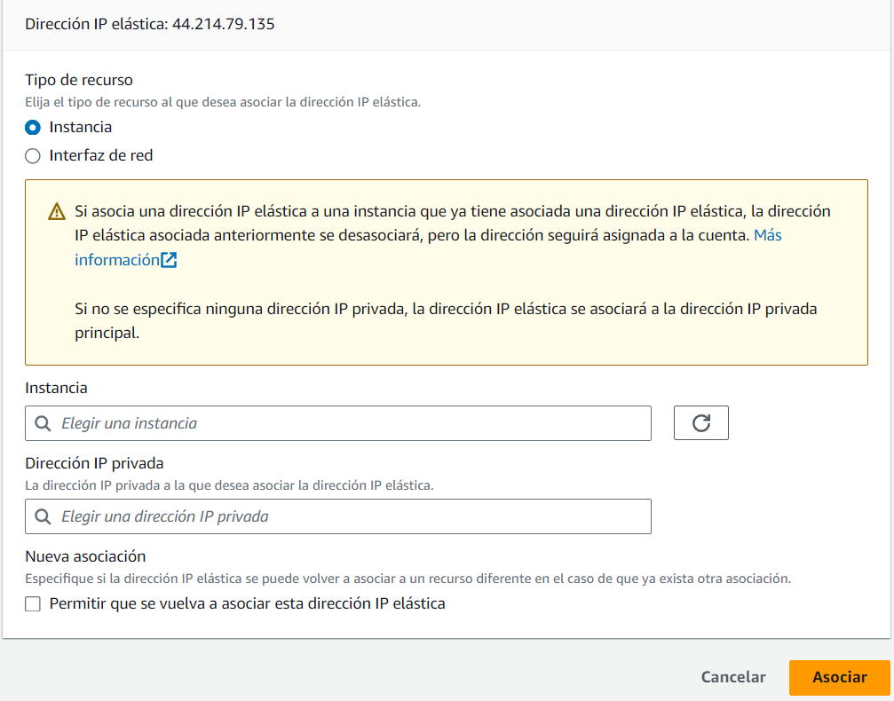

Creacion_completa_pila_LAMP
Creación de una maquina en un laboratorio de AWS.
1º Lo primero que tenemos que hacer es Lanzar la instancia.

2º Seleccionamos el S.O., que en este caso es Ubuntu.
 3º Elegimos el tipo de instancia.

4º Seleccionamos el par de claves que nosotros ya hemos descargado antes de iniciar el laboratorio. Nosotros la renombramos y seleccionamos Vockey.pem (la cual tendrá que tener los permisos cambiados).

5º Al grupo de seguridad le añadimos todos los servicios y la lanzamos:

Asignar una Ip a nuestra instancia.
1º Nos vamos a Direcciones IP estaticas y asignamos una nueva IP elastica:

2º Asignamos la IP

3º Una vez tenemos la IP, solo queda Asignarle a esta una instancia.

4º Seleccionamos la instancia y la asociamos. Así cada vez que reiniciemos el laboriatorio no cambiará la IP de la instancia.

Instalación de la pila LAMP
Antes de empezar, hay que recordar que queremos ver la ejecución de todos los comandos (set -x) y actualizamos los repositorios y paquetes. (sudo apt update) \ (sudo upgrade -y)
1º Instalamos y actualiamos el servidor WEB Apache 2.4
sudo apt install apache2 -y
2º Comprobamos el estado del Apache
sudo systemctl status apache2
3º Instalamos MySql para gestionar las bases de datos.
sudo apt install mysql-server -y
4º Instalación modulos php
sudo apt install php libapache2-mod-php php-mysql -y
5º Copiar el directorio de configuración de Apache
cp ../conf/000-default.conf /etc/apache2/sites-available
6º Reiniciamos el servicio Apache.
sudo systemctl restart apache2
7º Copiamos el archivo de prueva de PHP
cp ../php/index.php /var/www/html
8º Modificamos el propietario y el grupo del directorio /var/www/html
sudo chown -R www-data:www-data /var/www/html
Instalación de la herramientas adicionales.
Antes de empezar, hay que recordar que queremos ver la ejecución de todos los comandos (set -x)
1º Configuramos la variables.
PHPMYADMIN_APP_PASSWORD=usuario
APP_USER=usuario
APP_PASSWORD=contraseña
2º Actualizamos el sistema.
sudo update -y
3º Actualizamos los paquetes.
sudo upgrade -y
4º Configuramos las respuestas de las preguntas durante la instalación de Phpmyadmin.
echo "phpmyadmin phpmyadmin/reconfigure-webserver multiselect apache2" | debconf-set-selections
echo "phpmyadmin phpmyadmin/dbconfig-install boolean true" | debconf-set-selections
echo "phpmyadmin phpmyadmin/mysql/app-pass password $PHPMYADMIN_APP_PASSWORD" | debconf-set-selections
echo "phpmyadmin phpmyadmin/app-password-confirm password $PHPMYADMIN_APP_PASSWORD" | debconf-set-selections
5º Instalamos PHPMYADMIN.
sudo apt install phpmyadmin php-mbstring php-zip php-gd php-json php-curl -y
6º Creamos un usuario que tenga acceso a todas las bases de datos.
mysql -u root <<< "DROP USER IF EXITS 'APP_USER'@'%'"
mysql -u root <<< "CREATE USER' $APP_USER''@''%' IDENTIFIED BY ' $APP_PASSWORD'"
mysql -u root <<< "GRANT ALL PRIVILEGES ON *.* TO '$APP_USER'@'%'"
7º Instalamos phpmyAdmin
apt install phpmyadmin php-mbstring php-zip php-json php-curl -y
8º Instalacion de Adminer(aplicacion gestions de base de datos online, github en este caso)
wget https://github.com/vrana/adminer/releases/download/v4.8.1/adminer-4.8.1-mysql.php
9º Creamos directorio para Adminer.
mkdir -p /var/www/html/adminer
10º Movemos y renombramos el archivo.
mv adminer-4.8.1-mysql.php /var/www/html/adminer/index.php
11º Instalamos GoAccess
echo "deb http://deb.goaccess.io/ $(lsb_release -cs) main" | sudo tee -a /etc/apt/sources.list.d/goaccess.list
12º Añadimos clave publiaca en la maquina
wget -O - https://deb.goaccess.io/gnugpg.key | sudo apt-key add -
13º Actualizamos los repositorios.
apt update
14º Instalamos GoAccess
apt install goaccess -y
15º Creamos el directorio stats.
mkdir -p /var/www/html/stats
16º Modificamos permisos
chown www-data:www-data /var/www/html -R
17º Ejecutamos Goacces en segundo plano.
goaccess /var/log/apache2/access.log -o /var/www/html/stats/index.html --log-format=COMBINED --real-time-html --daemonize
18º Reiniciamos el servicio de Apache ```` systemctl restart apache2
````
19º Copiamos el archivo htacces en /var/www/html/stats.
```` cp ../htaccess/htaccess /var/html/stats/.htaccess
````
20º Copiamos el archivo de la configuración de Apache.
```` cp ../conf/000-default-htaccess.conf /etc/apache2/sites-avariable/000-default.conf
````
21º Reiniciamos el servicio de Apache
```` sudo systemctl restart apache2.service
````